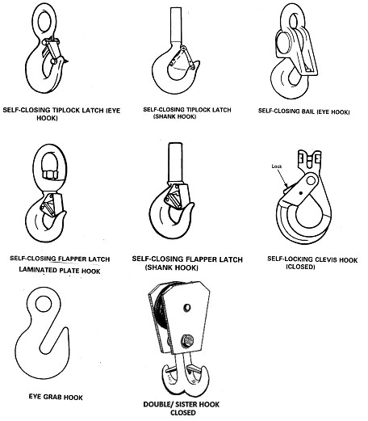
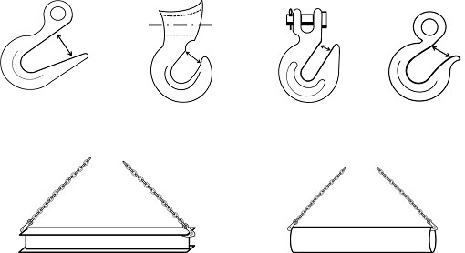

15.E Rigging Hardware (Excludes Reeving Hardware)
15.E–15.E.08
15.E Rigging Hardware (Excludes Reeving Hardware). (Includes all detachable rigging hardware used for load-handling activities). > See also "Rigging Hardware" in Appendix Q. All rigging hardware shall be constructed, installed, used, inspected and maintained in accordance with ASME B30.26.
15.E.01 All rigging hardware shall be inspected for defects prior to use on each shift and periodically as necessary during use to ensure that it is safe.
▸Note: Periodic inspections shall be documented and shall not exceed 1 year. The frequency shall be based on frequency of shackle use, severity of service conditions and nature of load-handling activities. Guidelines: for normal service is yearly; for severe service is monthly to quarterly; and for special service is as recommended by a qualified person. Defective rigging equipment shall be removed from service. Inspections shall be in accordance with the manufacturer's recommendations and at a minimum shall address:
- Wear greater than 10%;
- Deformations (straightness, nominal opening tolerances);
- That manufacturer appropriate connectors are used (i.e., never replace a shackle pin with a bolt).
15.E.02 Rigging hardware shall not be painted once purchased. While the painting of rigging gear for identification is common, USACE considers this an unacceptable practice that constitutes a dangerous condition. Painting of hardware can potentially cover defects creating an unsafe condition.
15.E.03 Drums, sheaves, and pulleys shall be smooth and free of surface defects that may damage rigging. In addition, drums, sheaves, or pulleys having eccentric bores, cracked hubs, spokes, or flanges shall be removed from service.
15.E.04 Connections, fittings, fastenings, and attachments used with rigging shall be of good quality, of proper size and strength, and shall be installed in accordance with recommendations of the manufacturer.
15.E.05 Job hooks, shop hooks and links, makeshift fasteners formed from bolts and rods, and other similar attachments shall not be used.
15.E.06 Shackles. All shackles shall be manufactured according to ASME B30.26.
- Only shackles marked by manufacturer with name or trademark of manufacturer (country only is not acceptable), WLL and size shall be used. Shackles shall be maintained by the user so as to be legible throughout the life of the shackle.
- Each new shackle pin shall be marked by manufacturer to show name or trademark of manufacturer and grade, material type or load rating.
- Shackles shall be inspected visually by the user (or other designated person) prior to each use and periodically.
- Repairs and/or modifications may only be as specified by the manufacturer. Replacement parts, like pins, shall meet or exceed the original manufacturer's specifications.
- Shackles shall not be eccentrically (side) loaded or shock loaded.
- Multiple sling legs shall not be applied to the shackle pin.
15.E.07 Hooks. All hooks used for lifting or load handling purposes shall be manufactured according to ASME B30.10. > See Figure 15-3.
- All hooks used for lifting or load handling purposes shall not be used in any other manner.
- Hooks that show wear exceeding 10% or an increase in the throat opening of 5% (maximum of ¼ in (6mm)), or as recommended by the manufacturer, or any visibly apparent bend or twist from the plane of the hook shall be removed from service.
FIGURE 15-3
Hooks

- The manufacturer's recommendations shall be followed in determining the WLL of the various sizes and types of specific and identifiable hooks. Any hook for which the manufacturer's recommendations are not available shall be tested to twice the intended safe working load before it is put into use. The employer shall maintain a record of the dates and results of such tests.
- Open hooks are prohibited in rigging used to hoist loads except for miscellaneous-type hooks (i.e., grab hooks, foundry hooks, sorting hooks, choker hooks, etc). These hooks may be used as long as they are inspected and maintained in accordance with manufacturer's recommendations. The use of these specialty-type hooks shall be identified in the applicable AHA and submitted to the GDA for acceptance. > See Figure 15-4.
- Manufacturer's identification (country only is not acceptable) and WLL shall be forged, cast, or die stamped on a low stress and non-wearing area of the hook.
- Duplex (sister) hooks shall be loaded equally on both sides unless the hook is specifically designed for single-point loading.
- If the duplex (sister) hook is loaded at the pinhole instead of at the two saddles, the load applied shall not exceed the WLL that would normally be shared by the two saddles or the WLL of the supporting equipment.
FIGURE 15-4
Miscellaneous-Type Open Hooks

15.E.08 Eyebolts, Eye Nuts, Swivel Hoist Rings and Turnbuckles. All eyebolts, eye nuts, swivel hoist rings and turnbuckles shall be manufactured according to ASME B30.26.
- WLLs shall be in accordance with the manufacturer's recommendation.
- Each turnbuckle, eye nut and eyebolt shall be marked with name or trademark of the manufacturer (country is not acceptable), size or WLL and grade (for alloy eyebolts). In addition, each swivel hoist ring must also be marked to show torque value (excluding trench cover hoist rings). Markings shall remain legible.
- This equipment shall be inspected visually before each use by the user (or other designated person) and at least annually to determine condition is safe for use.
- Turnbuckles shall not be side loaded and shall be rigged and secured to prevent unscrewing during the lift. In addition, end-fittings threads shall be fully engaged in the body threads.
- Shoulderless eyebolts shall not be loaded at an angle.
{kind=link}
{kind=link}